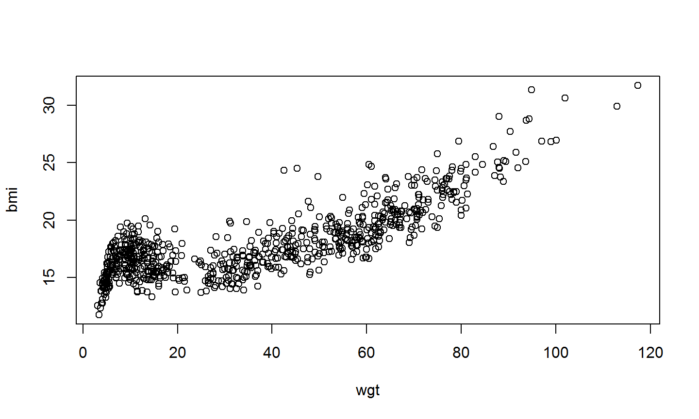

Rfunctionality- The blueprint of
R - Workspaces and projects
- Classes
- The blueprint of
- Reading in and exporting data
Statistical Programming with R
This lecture:
The blueprint of R
What we learned about R
- You type commands into the console and
Revaluates them - You can assign a name to an object by writing
name <- objectandRwill keep this in memory so you can refer to it later - Instead of working in the console, you can write code in the editor and send it to the console (by clicking “Run” or pressing CTRL + RETURN)
- This is good because you keep a record of what you did and can repeat later
- RStudio shows which objects you have created by listing them in the environment window
Packages
- Collections of functions and data made by other
Rusers for the good of theRcommunity. - There’s almost certainly a package for what you want to do
- but “buyer beware”
- Most packages can be found on https://cran.r-project.org/
Loading packages
There are two ways to load a package in R
library(stats)
and
require(stats)
Installing packages
The easiest way to install e.g. package mice is to use
install.packages("mice")
Alternatively, you can also do it in RStudio through
Tools --> Install Packages
Installing packages
- Can you trust a package?
- As I said: “Buyer beware”
- CRAN has some minimal checks
- Things to look for:
- Is the creator trustworthy?
- Is the package well-documented and maintained?
- Does it have many users?
- Do the creator/s respond to bug reports?
Environments
## Do we have any object named starwars? starwars
## Load the package dplyr. You still cannot see any object named starwars, but: library(dplyr) starwars
The package dplyr has its own environment, nested in but hidden from the global environment.
Environments
The global environment can be seen as a olympic-size swimming pool. Everything you do has its place there.
If you’d like, you may create another, separate environment to work in.
- A user environment would by default not have access to other environments
Packages have their own environments
- Everything needed to run the functions in a package is neatly contained within its own space
- See packages as separate (mini) pools that are connected to the main pool (the global environment)
Functions
A function is an object in
RIf you create a function, it is positioned in the global environment.
Everything that happens in a function, stays in a function. Unless you specifically tell the function to share the information with the global environment.
See functions as a shampoo bottle in a swimming pool to which you add some water. If you’d like to see the color of the mixture, you’d have to squeeze the bottle for it to come out.
R in depth
Workspaces and why you should (generally) not save them
A workspace contains all changes you made to environments, functions and namespaces.
A saved workspace contains everything at the time of the state wherein it was saved.
You can reload a saved workspace and continue working at a later point
When you exit an R session, you’re faced with the question of whether or not to save your workspace. You should almost never answer yes.
Why not to save?
- Code is reproducible and logical
- A saved workspace is whatever you did earlier and then forgot about
Workspaces and how not to save them

History
R by default saves (part of) the code history and RStudio expands this functionality greatly.
Most often it may be useful to look back at the code history for various reasons.
There are multiple ways to access the code history.
- Use arrow up in the console. This allows you to go back in time, one codeline by one. Extremely useful to go back to previous lines for minor alterations to the code.
- Use the history tab in the environment pane. The complete project history can be found here and the history can be searched. This is particularly convenient when you know what code you are looking for.
Working in projects in RStudio
R has a notion of the working directory. This is where R will look for, and save, files unless directed elsewhere
You can set your working directory manually with setwd(). But for a better, more stable and reproducible workflow, use projects: 
Working in projects in RStudio
- Every project has its own history
- Every project can have its own version control system
- When opening a project, this sets the working directory in the same folder
- When working in a project, files belonging to the same project are stored together
Classes
Classes in R
Remember the boys data from package mice:
library(mice) class(boys)
## [1] "data.frame"
class(boys$age)
## [1] "numeric"
model <- lm(bmi ~ I(wgt / (hgt / 100)^2), data = boys) class(model)
## [1] "lm"
Classes in R
Classes are used for an object-oriented style of programming. This means that you can write a specific function that
- has fixed requirements with respect to the input.
- presents output or graphs in a predefined manner.
When a generic function fun is applied to an object with class attribute c("first", "second"), the system searches for a function called fun.first and, if it finds it, applies it to the object.
If no such function is found, a function called fun.second is tried. If no class name produces a suitable function, the function fun.default is used (if it exists). If there is no class attribute, the implicit class is tried, then the default method.
Classes example: plotting without class
plot(bmi ~ wgt, data = boys)

Classes example: plotting with class
plot(lm(bmi ~ wgt, data = boys), which = 1)
Classes example: plotting with class
plot(lm(bmi ~ wgt, data = boys), which = 2)
Classes example: plotting with class
plot(lm(bmi ~ wgt, data = boys), which = 3)
Classes example: plotting with class
plot(lm(bmi ~ wgt, data = boys), which = 4)
Classes example: plotting with class
plot(lm(bmi ~ wgt, data = boys), which = 5)
Classes example: plotting with class
plot(lm(bmi ~ wgt, data = boys), which = 6)
Why is plot different for class "lm"?
The function plot() is called, but not used. Instead, because the linear model has class "lm", R searches for the function plot.lm().
If function plot.lm() would not exist, R tries to apply function plot() (which would have failed in this case because plot requires x and y as input)
plot.lm() is created by John Maindonald and Martin Maechler. They thought it would be useful to have a standard plotting environment for objects with class "lm".
Since the elements that class "lm" returns are known, creating a generic function class is straightforward.
Importing and exporting data
RData and RDS files
A single R object is saved as an RDS file
saveRDS(boys, file="SaveTheBoys.RDS")
moreboys <- readRDS("SaveTheBoys.RDS")
Remember about projects: The SaveTheBoys file now lies in the same directory as my project file.
Multiple R objects (or entire workspaces) can be saved as RData-files with save() and loaded with load()
save(boys, walking, file = "SaveTheseFiles.RData") read(file = "SaveTheseFiles.RData")
Delimited files
Import delimited files with the functions read.table, read.csv2 or read.delim2 Export with write.table, write.csv2 or write.delim2
The xlsx package contains functions readxlsx and writexlsx for working with excel files in R
Why the ‘2’?
read.csvreads comma-delimited files with decimal pointsread.csv2reads semicolon-delimited files with decimal commasread.delimreads tab-delimited files with decimal pointsread.delim2reads tab-delimited files with decimal commasRemember the option
stringsAsFactors = FALSE
SAS, Stata, SPSS and Mplus
The package
havenprovides wonderful functions to import and export many data types from software such as Stata, SAS, SPSS, and so on.For integrating Mplus into
R, packageMplusAutomationis essential.
Databases
You can keep your data in an Oracle database and work with it in R
library(ROracle): Oracle Database interface (DBI) driver for R.- Read Oracle tables into R
- Upload R tables into Oracle
- Write SQL syntax in R and execute it on the database
library(dbplyr): Lets you use dplyr syntax to work with databases